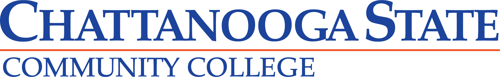

Immediate
Graduate from Chattanooga State Community College, Transfer to East Tennessee State Univeristy.
Short Term
My current short term goal is to maintain a high GPA at Chattanooga State, then use Scholarships and the GI Bill to pay my way through college at ETSU. My major is in Computer Science with a minor in Digital Media. I plan to network and acquire the skills necessary to work on a creative team producing entertainment products such as movies or video games.
Long Term
My long term goal is to aquire a stable career where I can be creative and hopefully independent. I plan on working for an entertainment company for awhile, and then work on my own projects. I hope to be financially stable to afford my own house and raise a family as well. I have already been working on an investment account, so hopefully I will be able to retire around 65 years old.